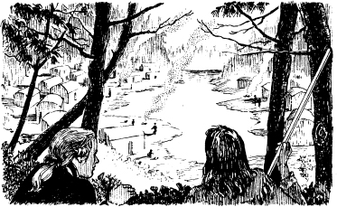
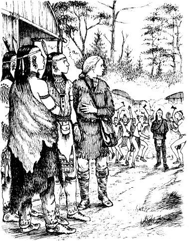

8
Người thày thuốc
Listen to Part 1:
Vào buổi tối, năm người đàn ông đến bờ phía bắc của Hồ Horican. Họ ra khỏi ca nô và Uncas cùng Chingachgook khiêng ca nô. Họ đặt nó dưới gốc một số cây.
Duncan nói: 'Chúng ta đã lạc đường rồi. Chúng ta sẽ đi đâu đây?'
Mắt Diều Hâu nói: 'Những người bạn thổ dân Mohican của tôi biết con đường đến ngôi làng của người Huron. Ngôi làng ấy nằm ở phía bắc của nơi này. Đó là nơi Magua đang đến. Chúng ta cũng sẽ đi về phía bắc.'

Trong hai ngày, nhóm người đàn ông đi theo con đường mòn. Họ đã đi rất nhiều dặm. Họ đến ngôi làng của người Huron vào ngày thứ hai. Lúc ấy là đầu giờ tối. Có khoảng một trăm ngôi nhà bên một hồ nước nhỏ.

Mắt Diều Hâu nói chuyện với Chingachgook và Uncas. Sau đó, ông nói chuyện với Duncan và Munro.
Mắt Diều Hâu nói: 'Tướng Munro, ông hãy ở lại với Chingachgook. Hãy ở lại trong rừng. Duncan và tôi sẽ vào làng. Uncas, hãy lên ngọn đồi ở phía tây. Quan sát ngôi làng. Nhanh chóng quay lại. Hãy kể cho chúng tôi biết về những người lính gác.'
Một giờ trôi qua. Bốn người đàn ông chờ đợi. Uncas vẫn chưa quay lại.
Bỗng nhiên, Duncan lên tiếng. Anh ta nói: 'Tôi có một kế hoạch. Mắt Diều Hâu, cho tôi mượn cái áo khoác của ông. Tôi không được mặc chiếc áo đỏ của người lính vào làng. Tôi sẽ đóng giả làm một người thày thuốc - một bác sĩ người Pháp. Tôi sẽ nói tiếng Pháp. Tôi sẽ đi khắp làng và vào trong các ngôi nhà. Người Huron sẽ không làm hại một người thày thuốc. Tôi sẽ tìm Alice và Cora.'
Listen to Part 2:
Đó là một kế hoạch nguy hiểm.
Duncan mặc vào chiếc áo khoác của Mắt Diều Hâu. Sau đó, anh ta bước vào ngôi làng của người Huron. Phía trước anh ta là một ngôi nhà gỗ lớn. Đó là nhà họp của các tù trưởng Huron. Duncan đi vào trong.
Một số tù trưởng Huron đang ngồi cùng nhau. Họ thấy Duncan đi vào. Một trong những tù trưởng tiến lên phía trước. Ông ta có mái tóc hoa râm, cao và khoẻ mạnh. Ông ta nói chuyện với Duncan bằng tiếng Huron. Nhưng Duncan không hiểu.
Duncan hỏi: 'Ông có nói được tiếng Pháp không?'
Người Huron đáp lại bằng tiếng Pháp: 'Anh đến đây để làm gì?'
Duncan nói: 'Tôi là một người thày thuốc. Vua nước Pháp đã cử tôi đến đây. Có ai trong số những người Huron bị ốm không?'
Bỗng nhiên, có tiếng kêu lớn từ trong rừng. Các tù trưởng rời khỏi nhà họp. Duncan đi theo họ. Có thêm nhiều người Huron nữa đang đi vào làng. Phía trước họ là một tù nhân. Đó là Uncas!

Mục lục
- Trang bìa
- Tiêu đề
- Nội dung
- Ghi chú về tác giả
- Ghi chú về câu chuyện này
- Nhân vật trong câu chuyện này
- 1 Hai chị em
- 2 Lạc trong rừng
- 3 Cuộc chiến ở Đồi Glenn
- 4 "Tôi là tù trưởng người Huron"
- 5 Đồn William Henry
- 6 "Khi nào sự trợ giúp đến"
- 7 Con đường
- 8 Vị thầy thuốc
- 9 Trong làng Huron
- 10 Con gấu
- 11 Vị tù trưởng già
- 12 Người cuối cùng của tộc Mohican
- Bản quyền